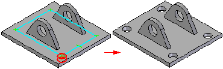
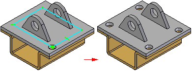
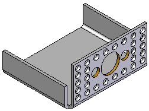
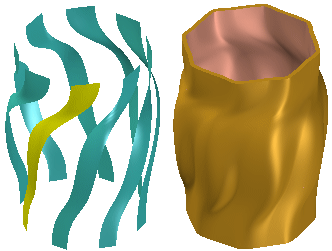
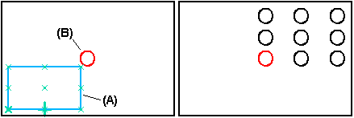
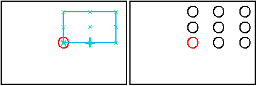
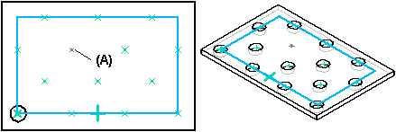
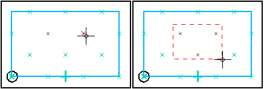
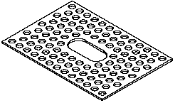
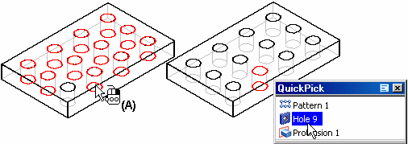

Pattern command (ordered)
In ordered modeling, use the Home tab→Pattern group→Pattern command  command to construct a rectangular or circular pattern of selected elements.
command to construct a rectangular or circular pattern of selected elements.
In the Assembly environment, this command is named Pattern Assembly Feature.
You can create a pattern of sketches by editing an existing sketch or by creating
a new sketch. In sketch mode, choose either the Home tab→Features group→Rectangular  or Circular Pattern
or Circular Pattern  command.
command.
You can select part features, assembly features, edges, surfaces, or design bodies as the parent elements to pattern. For example, you can construct a hole feature, and then construct a rectangular pattern of holes using the hole feature as the parent element of the pattern.

In an assembly, you can pattern assembly features, which allows you to modify two or more parts in one operation.

You can suppress individual pattern members to define gaps in a pattern to avoid other features.

Patterning elements other than features is useful when constructing models that use free-form surfaces. For example, you can construct a lofted surface, and then construct a circular pattern of the lofted surface.

Steps
The basic steps for defining a pattern feature are:
-
Select the geometry to pattern.
-
Draw the pattern profile or select an existing pattern sketch.
-
Select the parts to be modified by the pattern (assembly documents only).
When constructing a pattern, you can also specify whether the pattern is a fast pattern or a smart pattern using the Fast and Smart options on the command bar. You can set these options at any point while creating or editing a pattern.
For more information on smart and fast patterns, see the following Help topics:
Selecting the elements to pattern
The first step in constructing a pattern is selecting the parent elements. In a part or sheet metal document, you can pattern features, edges, curves, surfaces, or the entire design body. In an assembly document, you can pattern assembly features.
When constructing and editing pattern features, you cannot have more than one element type in a single pattern. For example, you cannot pattern a hole feature, a design body, and a curve in one operation.
The Select option allows you to specify what types of elements you want to pattern. To pattern one or more surfaces or edges (model topology) that are part of a surface or solid body, you can set the Single or Chain option. To pattern one or more features, such as a cutout or protrusion, set the Feature option. To pattern a curve, surface, or solid body, set the Body option.
The name in PathFinder indicates whether you constructed a pattern using features, design bodies, or model topology (surfaces or edges).
-
Patterning part and sheet metal features
You can select part and sheet metal features before or after starting the Pattern command. You can select the features in the graphics window or in PathFinder. You can select profile-based features or treatment features, but special rules apply when patterning a treatment feature by itself.
-
Patterning treatment features
You can pattern treatment features by themselves or in conjunction with a profile-based feature. To pattern a treatment feature by itself, the part geometry must allow it.
-
Patterning edges, curves, surfaces, and design bodies
When patterning other elements, such as edges, surfaces and curves, or design bodies, you must start the Pattern command, set the Select option on the command bar, and then select the elements you want to pattern in the graphics window.
-
Patterning assembly features
In the Assembly environment, you can pattern assembly features that remove material, such as holes, cutouts, and revolved cutouts. If the assembly is a weldment assembly, you can also pattern assembly features that add material, such as fillet welds, groove welds, and protrusion features.
The Select option, available during the Select Features Step, allows you to specify whether you can select material removal features, or material addition features. The Feature option allows you to select material removal features; the Body option allows you to select material addition features.
You can also specify which parts are included in the pattern feature. If you add parts to a pattern feature which were not in the parent feature, a message is displayed to instruct you the parts must also be added to the parent feature.
For more detailed information on constructing assembly-based features, see Assembly-Based Features.
Note:You can only pattern assembly features that were created within the current assembly. You cannot pattern assembly-driven part features.
Drawing the pattern profile or selecting an existing sketch
You can draw a new pattern profile or select an existing pattern profile from a sketch. If you draw a new profile, you must first specify a plane to draw it on.
Pattern profiles (A) do not have to be drawn such that they are aligned with the parent feature (B). This makes it possible to reuse pattern profiles.

When working with large or complex patterns, however, you may find it easier to construct the pattern if you draw the pattern profile so that it is aligned with the parent elements.

You can only reuse pattern profiles that were drawn as sketches.
Controlling the pattern profile
A pattern profile is the same as any other profile in Solid Edge. You must apply relationships and dimensions so it will behave predictably. You can also use the Variable Table to define variables between pattern profile dimensions and other dimensions on the model.
Specifying the pattern type
You can create rectangular and circular patterns with the Pattern command. With the profile window open, select the pattern type by clicking the Rectangular Pattern or Circular Pattern button on the Features tab. You can also draw lines, arcs, and other elements as construction geometry to help you define the pattern profile.
Any lines, arcs, and circles you draw will be automatically converted to construction geometry when you close the profile window.
For more information, see the Circular patterns and Rectangular patterns help topics.
Suppressing pattern occurrences
You can suppress pattern occurrences in rectangular and circular patterns with the Suppress Occurrence button on the command bar. With the profile window open, select the pattern profile, and then click the occurrence symbols to specify which occurrences you want to suppress (A). The symbols change size and color to indicate that the corresponding occurrences are suppressed.

You can individually select occurrences to suppress, or drag the cursor to fence any number of occurrences.

This option is useful for when you need to define gaps in a large pattern, for example, to leave space for another feature.

You can also redisplay suppressed pattern occurrences with the Suppress Occurrence button. Click the button and then select the suppressed occurrences you want to redisplay.
Suppressing pattern regions
You can also suppress a region of pattern occurrences using the Suppress Region option on the command bar. To suppress a region, you must select an existing closed sketch. The closed sketch can be of any shape. You can use the Flip option on the command bar to specify whether the suppressed occurrences are inside or outside of the closed sketch.
Deleting pattern occurrences
When constructing smart patterns, you can also delete pattern occurrences. Position the cursor over the pattern occurrence you want to delete (A), and then pause. When the ellipsis is displayed, click the left mouse button to display QuickPick. You can then use QuickPick to select the pattern occurrence, and then press Delete to delete it.

When you delete a pattern occurrence, the software is actually suppressing the corresponding x symbol on the pattern profile. Deleting, rather than suppressing, an occurrence can be useful when working with large or complex models, because you do not have to enter the profile window to suppress the occurrence. To restore the deleted occurrence, you can use the workflow for redisplaying suppressed occurrences.
Guidelines for creating pattern features
-
You can pattern multiple elements in one operation.
-
When patterning features, if the Fast option fails, click the Smart option on the command bar.
-
You can suppress individual feature occurrences in a pattern.
-
You can delete individual feature occurrences in a pattern.
How do I
Construct an ordered rectangular pattern featureCreate a 2D rectangular pattern of sketches
Construct an ordered circular pattern feature
Create a 2D circular pattern of sketches
Construct a Fast Pattern
Construct a Smart Pattern
Define the pattern plane
Learn more
Pattern featuresRectangular Pattern (ordered)
Circular patterns
Look up more details
Rectangular Pattern command bar (ordered sketch)Circular Pattern command bar (ordered sketch)
Pattern command bar